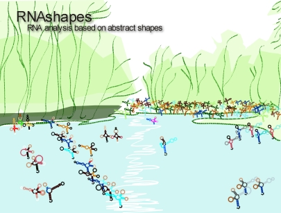

RNAshapes - RNA Analysis based on Abstract Shapes

RNAshapes [-h] [-a] [-s] [-p] [-i sampling iterations] input sequence
This manual describes RNAshapes, a software package that integrates
three RNA analysis tools based on the abstract shapes approach
(Steffen et al. 2005): the analysis of shape representatives
(Giegerich et al. 2004), the calculation of shape probabilities (Voss
et al. 2005), and the consensus shapes approach (Reeder and Giegerich
2005). This new package is completely reimplemented in C, and outruns
the original implementations significantly in runtime and memory
requirements. Additionally, we added a number of useful features like
suboptimal folding with correct dangling energies, structure graph
output, shape matching, and a sliding window approach.
In the following, we will shortly review the notion of abstract
shapes, and explain where its power comes from. We will then provide
an overview of the problems that can be approached in the new way.
An RNA shape is an abstract representation of an RNA secondary
structure. It is inspired by the dot-bracket representation known
from the Vienna RNA package (Hofacker et al. 1994). Consider the
following sequence and two secondary structures from its folding space
in dot-bracket representation:
AUCGGCGCACAGGACAUCCUAGGUACAAGGCCGCCCGUU
..(((.((..(((....))).(((.....))))))))..
..(((.....(((....))).(((.....)))..)))..
The shapes approach offers five abstraction levels (or shape types)
ordered in their degree of abstraction. Common to all levels is that
they abstract from loop and stack lengths, where unpaired regions are
represented by an underscore and stacking regions by a pair of squared
brackets. This is the least abstract shape type 1, so the two example
secondary structures become:
_[_[_[_]_[_]]]_
_[_[_]_[_]_]_
The succeeding shape types gradually increase abstraction, ending in
type 5, where no unpaired regions are included and nested helices are
combined. In this type, our example structures are both represented
as:
[[][]]
These abstractions form the basis of all applications of RNA abstract
shape analysis. In the following we give an overview of the main
applications, all integrated in the RNAshapes package.
Current RNA folding algorithms either calculate a single, minimum free
energy prediction, or a huge number of suboptimal structures, most of
which are quite similar and therefore redundant. With shapes, we
abstract from the concrete secondary structures and only consider
classes of structures that fall into different shapes. The shape
representative (in short: shrep) of a shape is the structure with
the minimum free energy inside a shape class.
In (Voss et al. 2005), we extended the shapes approach to the
computation of shape probabilities. The probability of a shape is the
sum of the probabilities of all structures that fall into this shape.
Several analyses indicate that this approach is quite effective. For
example, an analysis of a conformational switch shows the existence of
two shapes with probabilities approximately 2/3 vs. 1/3, whereas the
analysis of a micro RNA precursor reveals the hairpin shape with a
probability near to 1.0 (Voss et al. 2005).
RNAshapes contains three approaches for probability analysis, suitable
for different input sizes: Complete probability analysis, sampling
shapes probability analysis, and fast high probability shape analysis.
The well-known Sankoff algorithm (Sankoff 1985) for simultaneous RNA
sequence alignment and folding is currently considered an ideal, but
computationally over-expensive method. Available tools implement this
algorithm under various pragmatic restrictions. In (Reeder and
Giegerich 2005), we proposed to redefine the consensus structure
prediction problem in a way that does not imply a multiple sequence
alignment step. For a family of RNA sequences, our method RNAcast
explicitly and independently enumerates the near-optimal abstract
shape space, and predicts as the consensus an abstract shape common to
all sequences. For each sequence, it delivers the thermodynamically
best structure that has this common shape. Since the shape space is
much smaller than the structure space, and identification of common
shapes can be done in linear time (in the number of shapes
considered), the method is essentially linear in the number of
sequences. Our evaluation showed that the new method compares favorably
with available alternatives (Reeder and Giegerich 2005). It is
particularly useful on sequences with low conservation, where methods
based on sequence alignment cannot be employed. We have now integrated
RNAcast into the RNAshapes package.
As input, RNAshapes accepts a plain single sequence, or multiple
sequences in fasta format. When given multiple sequences, each
sequence is processed separately in the order of input.
Input can be given by four different ways:
- Command line parameter, e.g.:
RNAshapes GAGCCTGGGAGCTCTCTGGCTAACTGGGAACCCACTGCTTAAGCC
- Console standard input, e.g.:
echo GAGCTCTCTGGCTAACTGGGAACCCACTGCTTAAGCC | RNAshapes
RNAshapes < sequences.fasta
- File input with option -f, e.g.:
RNAshapes -f sequences.fasta
- Interactive input. To activate this mode, start RNAshapes without giving any input sequences.
Valid characters in an input sequence are ``ACGU'' and ``acgu''. ``T'' and
``t'' will be converted to ``U''. Other letters are mapped to ``N'' and will
not be paired. All other characters are ignored.
-h Display command option overview
-H option Display detailed information on option
This displays the corresponding section of the RNAshapes manual for
the given command line option.
-v Show version
This shows the version number of RNAshapes.
-a Shape folding (standard mode)
RNA folding based on abstract shapes. This is the standard mode of
operation when no other options are given. It calculates the shapes
and the corresponding shreps based on free energy minimization. The
energy range can be set by -e and -c. When not specified, the
energy range is set to 10% of the minimum free energy.
-s Complete suboptimal folding
Complete suboptimal folding of RNA. This mode uses a non-ambiguous
grammar that also handles dangling bases of multiloop components in a
non-ambiguous way. The energy range can be set by -e and
-c. When not specified, the energy range is set to 10% of the
minimum free energy.
-p Shape probabilities
Shape probability mode. This option calculates the shape probabilities
based on partition function. The probability of a shape is the sum of
the probabilities of all structures that fall into this shape. On a
computer with 2GB main memory, sequences up to a length of 300 bases
can be processed with this mode.
-q Shape probabilities (including shreps)
Shape probability mode. Calculates the shape probabilities based on
partition function. This is the same as -p, and additionally, the
corresponding shreps with their minimum free energies are
calculated. Note that this mode is slightly slower than -p and can
be used with sequences up to a length of 250 bases.
-P value Shape probabilities for mfe-best shapes
Shape probability mode. This mode first calculates the best value
shapes based on free energy minimization. In a second step, it
calculates the probability for each of these best shapes. This mode
has lower memory requirements than modes -p and -q and can be
used for longer sequences (up to 500 bases). The energy range must be
specified with -e or -c in order to get the desired number of
results.
-i value Sampling with value iterations
Probabilistic sampling based on partition function. This mode
combines stochastic sampling with a-posteriori shape abstraction. A
sample from the structure space holds M structures together with their
shapes, on which classification is performed. The probability of a
shape can then be approximated by its frequency in the sample.
Sequences up to a length of around 1500 can be handled with this mode.
In our experience, 1000 iterations are sufficient to achieve
reasonable results for shapes with high probability.
-C Consensus shapes (RNAcast)
For a family of RNA sequences, this method independently enumerates
the near-optimal abstract shape space, and predicts as the consensus
an abstract shape common to all sequences. For each sequence, it
delivers the thermodynamically best structure which has this common
shape. Since the shape space is much smaller than the structure space,
and identification of common shapes can be done in linear time (in the
number of shapes considered), the method is essentially linear in the
number of sequences.
Input for RNAcast must be provided in multiple fasta format, e.g.:
cat test.fasta
>seq1
CACACAAAGGCAGCGGAACCCCCCUCCUGGUAACAGGAGCCU
>seq2
AGGCAGCGGAAAUCCCCACCUGGUAACAGGUGCCUCUGC
>seq3
CCUUUGCAGGCAGCGGAAUCCCCCACCUGGUGACAGGUGCCU
The output of RNAcast first shows the common shape, the score (the sum
of the structure energies), and the ratio of the score to the sum of
all mfe values. A ratio near 1.0 means a good conservation, a lower
ratio means less conservation. Then, for each input RNA the predicted
shrep, its energy, and its individual rank (R = ...) in the shape
space is printed:
RNAshapes -f test.fasta -C -e 2
1) Shape: [[][]] Score: -40.70 Ratio of MFE: 0.96
>seq1
CACACAAAGGCAGCGGAACCCCCCUCCUGGUAACAGGAGCCU
-12.30 .......((((...((....))..(((((....))))))))) [[][]] R = 1
>seq2
AGGCAGCGGAAAUCCCCACCUGGUAACAGGUGCCUCUGC
-13.10 ..((((.((....)).((((((....))))))...)))) [[][]] R = 2
>seq3
CCUUUGCAGGCAGCGGAAUCCCCCACCUGGUGACAGGUGCCU
-15.30 .......((((...((....))..(((((....))))))))) [[][]] R = 1
To get more results, increase energy range with -e or -c.
We propose to use the output of the consensus shapes analysis as input
for RNAforester (Hoechsmann et al., 2004), a multiple RNA structure
alignment program. Use output type -o f together with option -C
to generate suitable input for RNAforester. For example:
RNAshapes -f test.fasta -C -o f | RNAforester -m
Note that with output type -o f only the result for the first
consensus is printed (otherwise RNAforester would not work
properly). Use the shape match option -m to get alternative
results. RNAforester is now part of the Vienna RNA package and can be
downloaded at http://www.tbi.univie.ac.at/~ivo/RNA/.
-r Calculate structure probabilities
This calculates the probability of every computed structure. It can be
combined with any sequence analysis mode. Note that this option
increases processing time of modes -a, -s and -C.
-w value Specify window size
Beginning with position 1 of the input sequence, the analysis is
repeatedly processed on subsequences of the specified size. After each
calculation, the results are printed out and the window is moved by
the window position increment (-W), until the end of the input
sequence is reached.
-W value Specify window position increment (use with -w) [1]
This specifies the increment for the window analysis mode (-w).
-m shape Match shape (use with -a, -s, -p, -q, or -C)
Specify a shape for the corresponding mode of operation. For example,
with options -p -m '[]' the probability of shape [] is
computed.
-e value Set energy range (kcal/mol)
This sets the energy range for shape folding (-a), complete
suboptimal folding (-s), probability analysis with -P, and
consensus shapes analysis (-C). value is the difference to the
minimum free energy for the sequence.
-c value Set energy range (%) [10]
This sets the energy range as percentage value of the minimum free
energy. For example, when -c 10 is specified, and the minimum free
energy is -10.0 kcal/mol, the energy range is set to -9.0 to -10.0
kcal/mol.
-t value Specify shape type (1-5) [5]
The shape type is the level of abstraction or dissimilarity which
defines a different shape. In general, helical regions are depicted by
a pair of opening and closing square brackets and unpaired regions are
represented as a single underscore. The differences of the shape types
are due to whether a structural element (bulge loop, internal loop,
multiloop, hairpin loop, stacking region and external loop)
contributes to the shape representation: Five types are
implemented. Their differences are shown in the following example:
AUCGGCGCACAGGACAUCCUAGGUACAAGGCCGCCCGUU
..(((.((..(((....))).(((.....))))))))..
Type 5: Most abstract - helix nesting pattern and no unpaired regions
[[][]]
Type 4: helix nesting pattern and unpaired regions in external loop and multiloop
[[][]]
Type 3: nesting pattern for all loop types but no unpaired regions
[[[][]]]
Type 2: nesting pattern for all loop types and unpaired regions in external loop and multiloop
[_[[][]]]
Type 1: Most accurate - all loops and all unpaired
_[_[_[]_[]]]_
-F value Set probability cutoff filter (use with -p, -q or -P)
This option sets a barrier for filtering out results with very low
probabilities during calculation. The default value here is 0.000001,
which gives a significant speedup compared to a disabled filter. Note
that this filter can have a slight influence on the overall
results. To disable this filter, use option -F 0.
-T value Set probability output filter (use with -p, -q or -P)
This option sets a filter for omitting low probability results during
output. Unlike -F, this option does not have any influence on
probabilities beyond this value.
-M value Set maximum loop length [30] (use -M n for unrestricted)
This option sets the maximum lengths of the considered internal and
bulge loops. The default value here is 30. Note that this restriction
can have a very slight influence on the calculated structure and shape
probabilities. For unrestricted loop lengths, use option -M n. This
will increase calculation times and memory requirements.
-y value Set minimal shape length
This option sets the minimal shape length. Subshapes smaller than
value are omitted from the analysis.
-l Allow lonely base pairs
In default mode, RNAshapes only considers helices of length 2 or
longer. With option -l, lonely base pairs are also included.
-u Ignore unstable structures (use with -a, -s or -C)
This option filters out closed structures with positive free
energy.
-o value Specify output type (1-4,f) [2]
Specifies the output type. Output type 1 mimics RNAfold and RNAsubopt.
Type 2 is the default RNAshapes output. Type 3 is similar to type 2,
but without parentheses and with only a single space between
results. This output type can be used for exporting results as a comma
separated text-file to other applications like Microsoft Excel. Type 4
is a colored variant of type 2. Additional output types can be defined
with option -O.
In consensus shapes analysis (-C), output type f can be used to
generate suitable input for RNAforester (a multiple RNA structure
alignment program; see -C for details).
-O string Specify output format string
The option -O can be used to ``fine-tune'' the format of the printed
results, for example when we are only interested in parts of the
result, or when results of RNAshapes should be used as input for other
programs. The syntax is as follows:
TYPE{FORMAT}...TYPE{FORMAT}
where TYPE specifies the result element:
D: structure in dot-bracket notation
S: shape string
E: energy
P: shape probability
R: structure probability (option -r)
C: shape rank (option -C)
V: verbatim output, independent of result element
FORMAT is the C-format string that shall be used to print the
corresponding result element. Typical C-format strings are %.2f for a
floating point number with two decimal places and %s for a string. For
example, to print only the structure followed by its energy, we can
use -O 'D{%s\t}E{%.2f}V{\n}'. The symbol '\n' performs a line break,
the symbol '\t' a tabulator. An ANSI escape sequence can be used with
symbol '\e' (see Example 4 below).
The standard output types (option -o) are defined as follows:
1) 'D{%s }E{(%.2f) }R{(%.7f) }P{%.7f }S{%s}C{ R = %d}V{\n}'
2) 'E{%-8.2f}R{(%.7f) }D{%s }P{%.7f }S{%s}C{ R = %d}V{\n}'
3) 'E{%.2f }R{%.7f }D{%s }P{%.7f }S{%s}C{ %d}V{\n}'
4) 'E{%-8.2f}R{(%.7f) }D{\e[1;31m%s\e[0m }
P{\e[1;30m%.7f\e[0m }S{%s}C{ R = %d}V{\n}'
-S value Specify output width for structures
This splits the structure strings into parts of the specified
length. This option is useful when displaying results for long
sequences that would otherwise not fit onto the screen.
-# value Print only the first value results
This option specifies the total number of results to be printed. When
this number is reached, the program terminates. Note that this option
does not reduce calculation time or memory requirements (except for
modes -s and -i).
-g value Generate structure graphs for first value structures
This generates postscript structure graphs for the first value
structures computed for a sequence. If multiple sequences are given,
value graphs are generated for each sequence.
The filenames of the structure graphs consist of several parts:
1. When the input sequence is given in fasta format, the first 12
characters of the sequence description are taken. White-spaces and
special characters are removed. When no description is available,
``rna'' is chosen as standard name.
2. The sequence position in window mode (option -w).
3. The running number of the result.
For example, the first result of a sequence called ``xyz'' at position 7
in window mode will be saved in file xyz_7_1.ps.
-L Highlight uppercase characters in structure graphs
Used with option -g, this generates postscript structure graphs
where all uppercase characters in the input sequence are
highlighted. This option is useful for marking interesting regions of
the input sequence.
-N Do not include additional information in graph output file
In standard operation, the postscript structure graph generation
(option -g) generates files with shape, energy, and shape
probability (if available) included at the bottom. Use this option to
suppress this.
-A Omit samples in output
Omit output of samples in sampling mode (-i)
-f file Read input from file
Let RNAshapes load its input data from file. file can
contain a plain single sequence, or multiple sequences in fasta
format. When given multiple sequences, each sequence is processed
separately in the order of input.
Valid characters in an input sequence are ``ACGU'' and ``acgu''. ``T'' and
``t'' will be converted to ``U''. Other letters are mapped to ``N'' and will
not be paired. All other characters are ignored.
-B Show progress bar (use with -p, -q or -P)
Setting this option activates a progress bar. This is useful when
experimenting with options -p and -q, to get an impression of
the expected running time.
-z Enable colors (in interactive mode: disable colors)
This option enables colored output. In interactive mode, this is the
default setting, so use -z to disable colors here.
-Z Enable colors for dotbracket and shape strings
This option colors dotbracket and shape strings in the result output,
such that corresponding structural elements have the same color in
both representations.
-D string Convert dotbracket-string to shape (choose type with -t)
Convert a dotbracket-string into a shape. Choose the shape type with
option -t. The default shape type is 5. For example:
RNAshapes -D '.((((.(((....))).))))...(((....))).' -t 4
_[]_[]_
-U Start graphical user interface
This option starts the graphical user interface included in the
RNAshapes distribution. It requires Java 1.4.2 or later (download from
http://java.sun.com/). Note that the RNAshapes distribution for
Microsoft Windows includes a slightly different user interface.
It does not require Java and additionaly, it offers an interactive
visualization of the calculated RNA structures.
:s Show current configuration
This command shows the current settings in an interactive session.
:d Reset configuration
This command sets all settings to their default values.
:e string Execute system command
Command :e executes a system command. For example, we can use the
command :e gv rna_1.ps to open a structure graph file created with
option -g (on a unix machine with gv installed).
:q Quit
This command quits an interactive RNAshapes session.
Calculate shapes based on free energy minimization:
RNAshapes GAGCCTGGGAGCTCTCTGGCTAACTGGGAACCCACTGCTTAAGCC
Pipe file input.seq into the program:
RNAshapes < input.seq
Calculate probabilities for input sequences:
RNAshapes -p < input.seq
Calculate probabilities for the 5 energetically best shapes, using an
energy range up to 30% of the minimum free energy. Generate structure
graphs for the first three structures of each sequence:
RNAshapes -P 5 -c 30 -g 3 < input.seq
Calculate probability of shape _[]_[]_[]_, using shape type 4:
RNAshapes -p -m _[]_[]_[]_ -t 4 < input.seq
Calculate probability of shape [], using a window of size 100:
RNAshapes -p -m [] -w 100 < input.seq
See more examples in the RNAshapes user's manual (RNAshapes.pdf).
RNAshapes returns a zero exit status if it succeeds. Non zero is
returned in case of failure.
Copyright (C) 2005-2006 Peter Steffen, Bjoern Voss, Jens Reeder,
Marc Rehmsmeier, Robert Giegerich.
PS, JR, RG: Faculty of Technology, Bielefeld University, 33594
Bielefeld, Germany
BV: Institute of Biology II, Experimental Bioinformatics, Freiburg
University, Schaenzlestr. 1, 79104 Freiburg, Germany
MR: Center for Biotechnology (CeBiTec), Bielefeld University, 33594
Bielefeld, Germany
Send comments/bug reports to: P.Steffen <psteffen@techfak.uni-bielefeld.de>.
Updates: http://bibiserv.techfak.uni-bielefeld.de/rnashapes/
RNAshapes contains code from the following contributors:
Structure graph output:
Vienna RNA Package, version 1.5.
Copyright (C) Ivo Hofacker, Peter Stadler, Walter Fontana, Stefan Wuchty.
Institute for Theoretical Chemistry of the University of Vienna.
Based on NAVIEW, Copyright (C) 1988 Robert E. Bruccoleri
Random number generator MT19937:
Copyright (C) 1997-2002, Makoto Matsumoto and Takuji Nishimura,
All rights reserved.
Editline library (libedit):
Copyright (C) 1997-2003 The NetBSD Foundation, Inc.
All rights reserved.
P. Steffen, B. Voss, M. Rehmsmeier, J. Reeder and
R. Giegerich. RNAshapes: an integrated RNA analysis package based on
abstract shapes. Bioinformatics (2005), Epub ahead of print.
R. Giegerich, B. Voss and M. Rehmsmeier. Abstract Shapes of RNA.
Nucl. Acids Res. (2004), Vol.32, pp. 4843-4851.
M. Hoechsmann, B. Voss and R. Giegerich. Pure Multiple RNA Secondary
Structure Alignments: A Progressive Profile Approach. IEEE/ACM
Transactions on Computational Biology and Bioinformatics (2004),
Vol.1(1), pp. 53-62.
I.L. Hofacker, W. Fontana, P.F. Stadler, L.S. Bonhoeffer, M. Tacker
and P.Schuster. Fast folding and comparison of RNA secondary
structures. Monatshefte f. Chemie (1994), Vol.125, pp. 167-188.
J. Reeder and R. Giegerich. Consensus shapes: an alternative to the
Sankoff algorithm for RNA consensus structure prediction.
Bioinformatics (2005), Vol.21(17), pp. 3516-3523.
D. Sankoff. Simultaneous Solution of the RNA Folding, Alignment and
Protosequence Problems. SIAM J. Appl Math (1985), Vol.45(5),
pp. 810-825.
B. Voss, R. Giegerich and M. Rehmsmeier. Complete Probabilistic
Analysis of RNA Shapes. Manuscript under review. (2005).